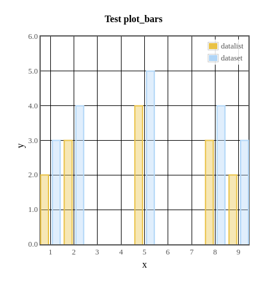
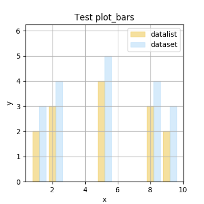
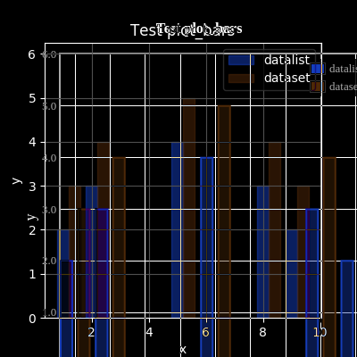
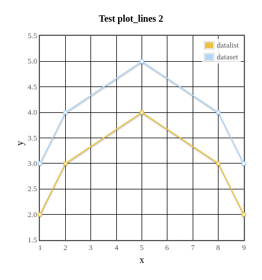
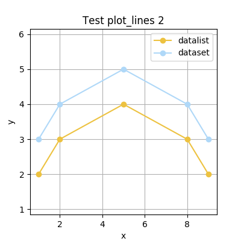
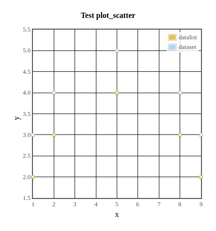
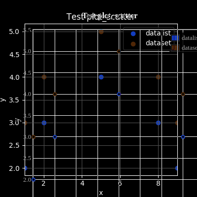
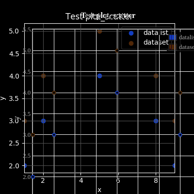

-
SimpleGUICS2Pygame_check
script/SimpleGUICS2Pygame_check.py (March 5, 2020)
=====================================================
PATH:
/home/opi/.cargo/bin
/home/opi/bin
/usr/local/bin
/usr/bin
/bin
/usr/local/games
/usr/games
/QUICK/progs/bin
/snap/bin
/QUICK/progs/Java
/home/opi/data/hg/vNu-scripts/vNu-scripts
/QUICK/progs/tikzit/bin
/home/opi/data/hg/tsv2htmltable_WORK/src/scripts
PYTHONPATH:
/home/opi/data/git/current/simpleguics2pygame
/home/opi/data/git/current/simpleguics2pygame/
python - version 2.7.13 (default, Sep 26 2018, 18:42:22)
[GCC 6.3.0 20170516]
sys.path:
/home/opi/data/git/current/simpleguics2pygame/SimpleGUICS2Pygame/script
/home/opi/data/git/current/simpleguics2pygame
/usr/lib/python2.7
/usr/lib/python2.7/plat-x86_64-linux-gnu
/usr/lib/python2.7/lib-tk
/usr/lib/python2.7/lib-old
/usr/lib/python2.7/lib-dynload
/usr/local/lib/python2.7/dist-packages
/usr/lib/python2.7/dist-packages
/usr/lib/python2.7/dist-packages/PILcompat
/usr/lib/python2.7/dist-packages/gtk-2.0
/usr/lib/python2.7/dist-packages/wx-3.0-gtk2
import matplotlib ok - Version 2.0.0
import pygame ok - Version 1.9.1release
pygame.init() 6 modules loaded ok
import SimpleGUICS2Pygame ok - Version 02.00.00 WORKING VERSION March 8, 2020
import SimpleGUICS2Pygame.codeskulptor ok
import SimpleGUICS2Pygame.codeskulptor_lib ok
import SimpleGUICS2Pygame.numeric ok
import SimpleGUICS2Pygame.simplegui_lib ok
import SimpleGUICS2Pygame.simplegui_lib_draw ok
import SimpleGUICS2Pygame.simplegui_lib_fps ok
import SimpleGUICS2Pygame.simplegui_lib_keys ok
import SimpleGUICS2Pygame.simplegui_lib_loader ok
import SimpleGUICS2Pygame.simpleguics2pygame ok
import SimpleGUICS2Pygame.simpleplot ok
-
test_button_label
-
test_circle
-
test_colors_constants
-
test_colors_html
-
test_colors_html_hsla
-
test_colors_html_rgba
-
test_command_line_options
('test_command_line_options.py', 'results_py2/test_command_line_options.png')
('test_command_line_options.py', 'results_py2/test_command_line_options.png')
-
test_dir
List dir() differences between CodeSkulptor (January 2015) and this "Python":
No difference.
-
test_grid
-
test_image
-
test_input
-
test_line
-
test_numeric
-
test_objects
button<type 'instance'><Control object><Control object>
canvas<type 'instance'><Canvas object><Canvas object>
frame<type 'instance'><Frame object><Frame object>
image<type 'instance'><Image object><Image object>
input<type 'instance'><TextAreaControl object><TextAreaControl object>
label<type 'instance'><Control object><Control object>
sound<type 'instance'><Sound object><Sound object>
timer<type 'instance'><Timer object><Timer object>
-
test_simpleplot_barsImages different: 56!



-
test_simpleplot_linesImages different: 56!


![[results_py2/test_simpleplot_lines_diff.png]](../results_py2/test_simpleplot_lines_diff.png "Difference images.")
-
test_simpleplot_scatterImages different: 57!

![[results_py2/test_simpleplot_scatter.png]](../results_py2/test_simpleplot_scatter.png "Result of test.") 

-
test_sound
Load from web "arrow.mp3"
Load from web "jump.ogg"
Load from web "bonus.wav"
Load local "chirp_1s.wav"
Play local "chirp_1s.wav" 1.000000s
(MP3 is NOT supported by Pygame)
Play "arrow.mp3" 0.000000s
Play "jump.ogg" 0.350884s
Play "bonus.wav" 0.448481s
stop
-
test_text